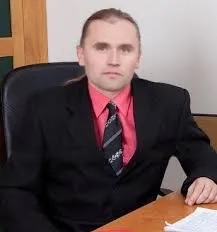
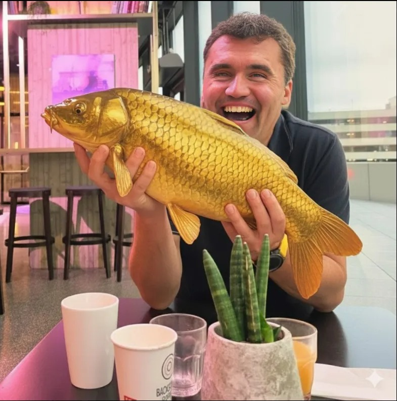

O fondu
Mezinárodní nadační fond pro Absolventy Obchodní Akademie Kroměříž (MNFPAOAKM) vznikl za účelem podpory pedagogického sboru, studentů a absolventů školy. Naším posláním je uchovat odkaz výjimečných učitelů, kteří formovali generace studentů, a zároveň podporovat moderní vzdělávací metody a projekty.
Fond zaštiťuje hlavní mecenáš Petr Novotný, absolvent OA Kroměříž.
Hvězdy OAKM a Největší podporovatelé

Profesor Magistr Petr Novotný
Pyotr je očividně prestižní multiklasový build, co posbíral
prestižní školy jak achievementy ve Steam knihovně a pak si řekl,
že jedna specializace je pro amatéry. K tomu přidal prestižní mix
rybářství, archeologie, fotbalu a IT, takže působí jako boss fight
mezi pedagogem, technikem a člověkem, co ví o kaprech víc než
kapři sami. Celé to má extrémně prestižní vibe typu „když už
životopis, tak ať je prestižní jak deluxe DLC“.
Jo a je to hlavní mecenáš fondu, takže když se ho zeptáte, jestli
vám půjčí peníze na nový PC, tak vám asi řekne, že to není
charita, ale když mu řeknete, že chcete investovat do svého
vzdělání a kariéry, tak vám možná dá slevu na vstupné do jeho
kurzu o tom, jak být prestižní v excel tabulkách...
Magistr Tomáš Valach
Tomík je extrémně prestižní techno wizard, co učí děti informatiku, staví roboty, lítá s drony, modeluje ve 3D a mezitím žije ve vztahu s CSS intenzivnějším než většina lidí svoje manželství. Je tak prestižní webdesigner, že pravděpodobně otevírá CSS soubory jen proto, aby se emocionálně napojil na flexbox a ve 3 ráno ladil prestižní hover efekty s výrazem člověka, co právě objevil smysl života. Celé jeho CV působí jako prestižní kombinace VR developera, IT učitele a člověka, který by radši strávil víkend centrováním divu než odpočinkem.
zahraj si tomasovy kaskadove stylyInženýr Martin Buriánek
Martin je extrémně prestižní, fakt až podezřele prestižní člověk, co dělá prestižní C# programování, prestižní weby v JS/PHP a ještě prestižní LEGO roboty, což je už skoro meta-prestižní level. Navíc má prestižní background z VUT Brno a UTB Zlín, takže je to taková dvojitě prestižní akademická kombinace, co působí až moc prestižně na jednoho člověka. A když zrovna nedělá prestižní výuku informatiky na gymplu v Holešově, tak pravděpodobně sedí v Cisco Packet Traceru a přidává další vrstvu prestiže do už tak přeprestižněného života.
zahraj si martinovy siteMagistr Antonín Ulman
Tenhle člověk je tak prestižní, že zvládá C#/Unity, kyberbezpečnost i 2D/3D grafiku a ještě u toho vypadá, že to všechno dělá jednou rukou a druhou kliká na něco prestižního. K tomu přidej prestižní mix IT učitele, správce sítí, grafika a webmastera, což je už skoro prestižní multitasking boss level. A protože to nestačí, má ještě prestižní drony, prestižní weby a prestižní studium na UPOL, takže celkově čistě prestižní overload existence.
zahraj si antoninovy csharpy
Magistr Hábl Marcel, MBA
Marcel Hábl je extrémně „prestižní“ kariérní multitool – prestižní učitelsko-poradenský portfolio, kde řeší prestižní kariérní poradenství, prestižní coaching a celkově prestižní výchovu studentů v Kroměříži, takže to působí skoro jako prestižní akademická NPC postava s maximálním XP ve škole.
Do toho má ale v historii i prestižně známý fotbalový „side quest“ z kauzy úplatků kolem ligových rozhodčích, kde se řešily dost neprestižní věci a skončilo to prestižně nehezkými soudními důsledky a zákazem činnosti ve fotbale, což mu do životního portfolia přidalo trochu temnější prestižní DLC. 40 Litrů nafty na kříž se stane kulturním dědictvím Kroměříže.
Inženýrka Dana Stejskalová
o jejim zivote nic nevime jelikoz je to zkurvena plesivka ktera by si mela vypocitat urok jeji posledni vule az te devce odjebu hlavu.
zahraj si par her na pocitani mezd